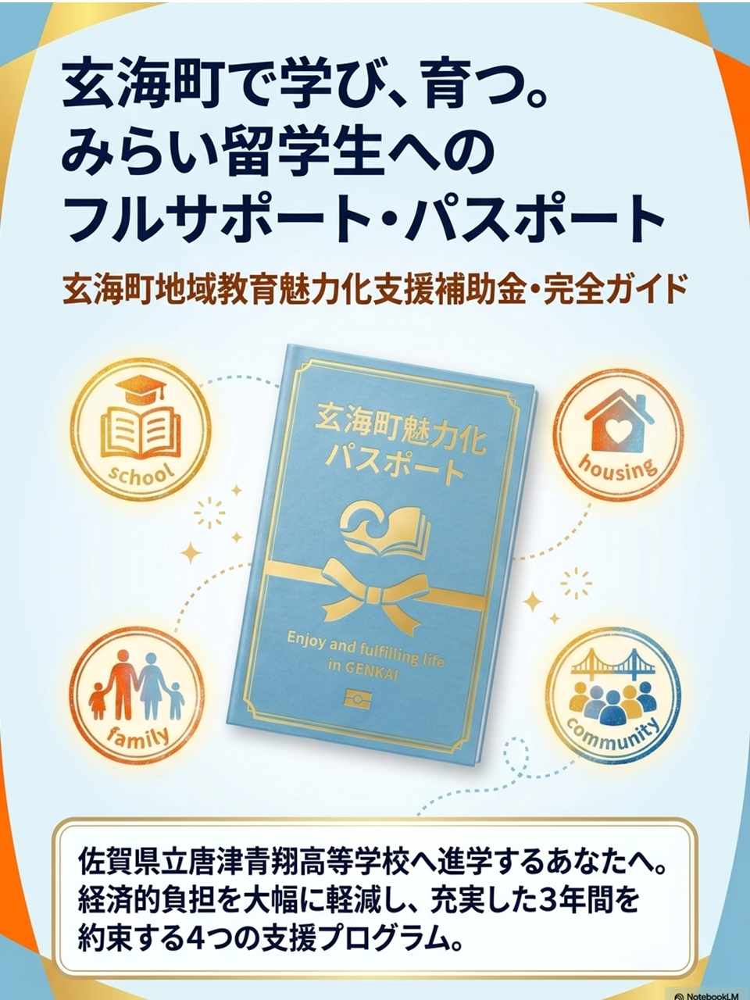
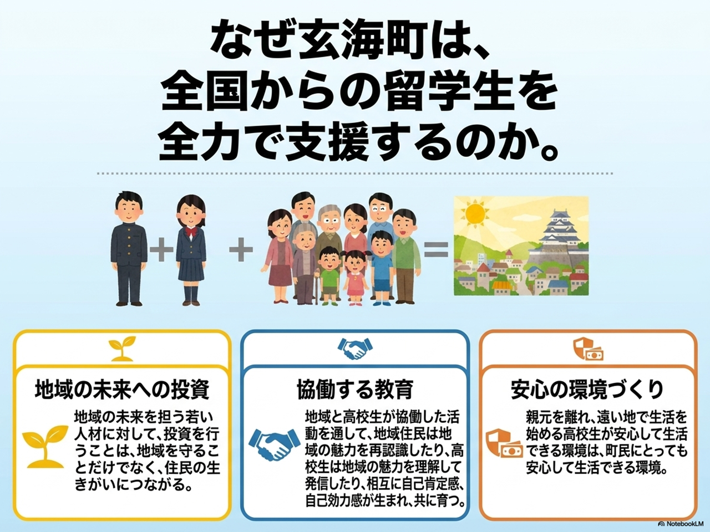
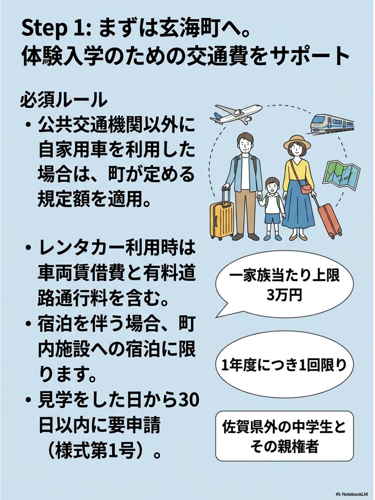
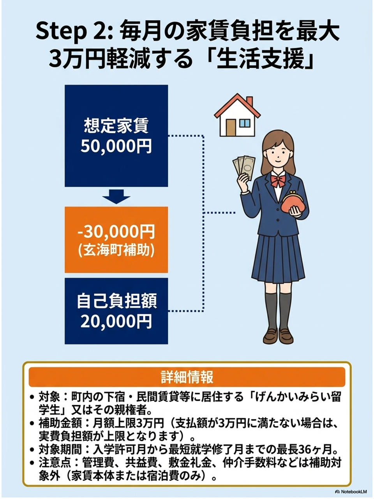
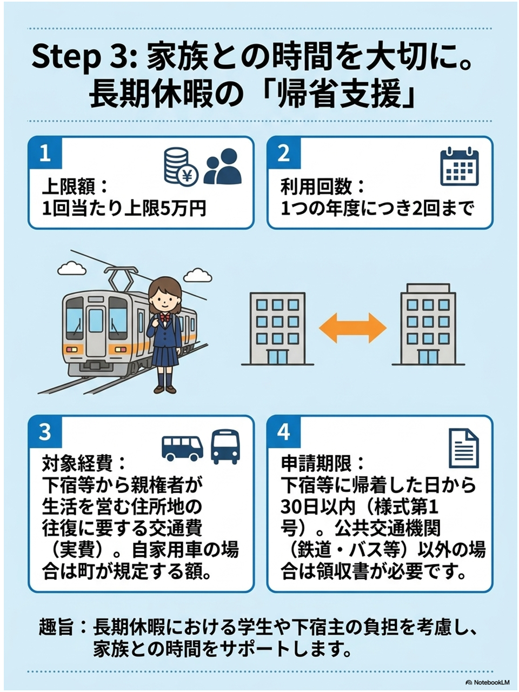
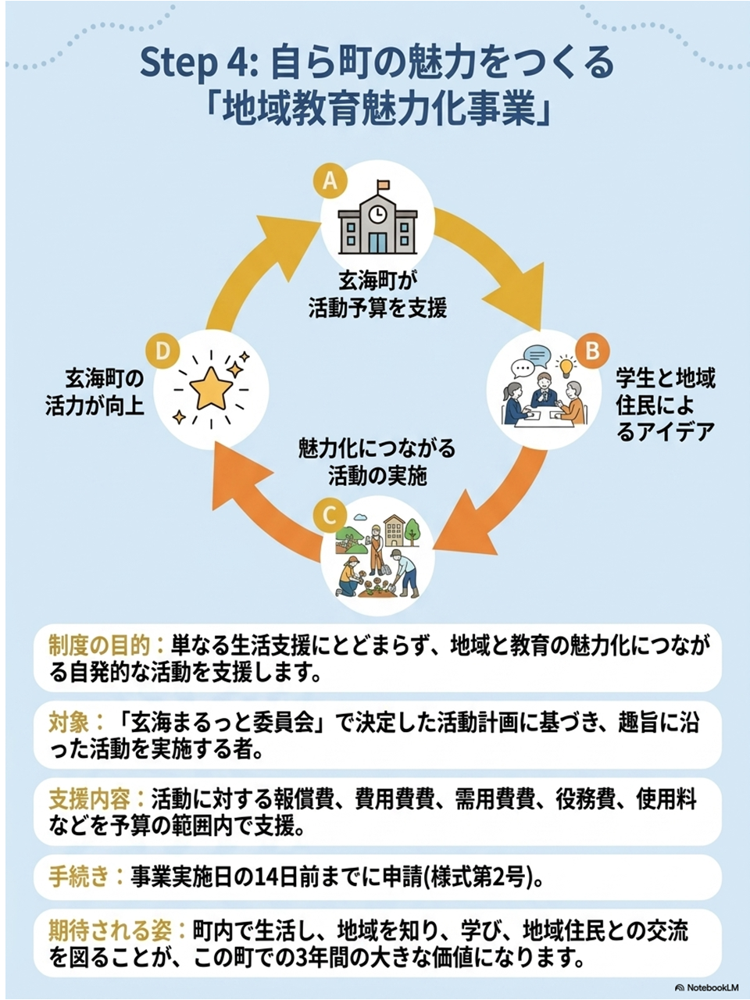
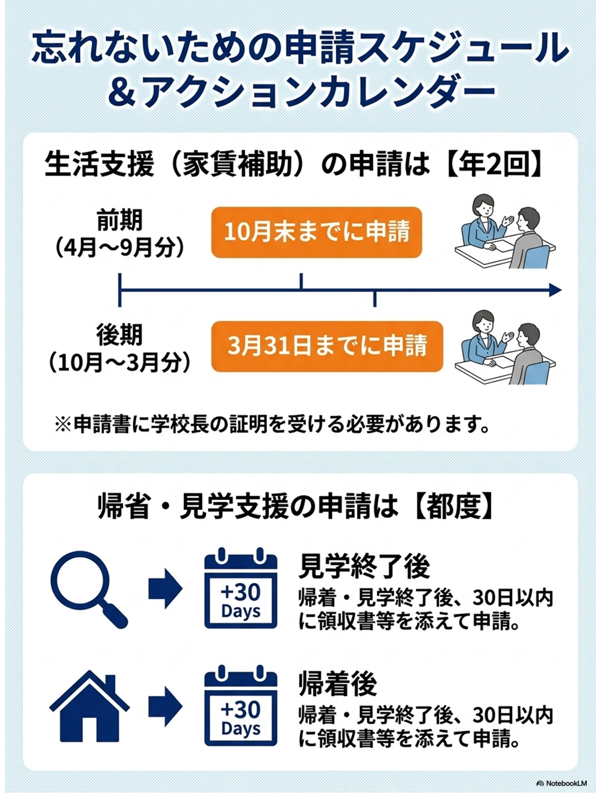
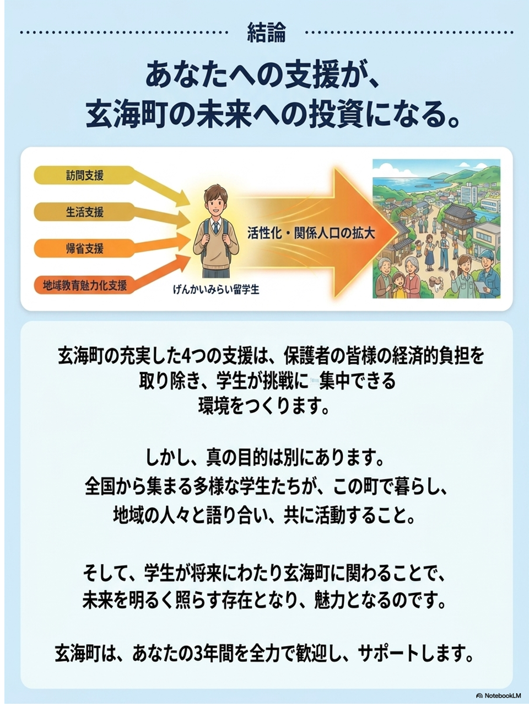

佐賀県立唐津青翔高等学校へ進学するあなたへ。経済的負担を大幅に軽減し、充実した3年間にする制度をご紹介します 。

なぜ玄海町は全国からの留学生を全力で支援するのか。その想いと、本ガイドの内容です。

県外の中学生と親権者を対象に、上限3万円（1年度1回）を補助します。

町内の下宿等に居住する場合、最長36ヶ月間、月額上限3万円をサポートします。

長期休暇の帰省交通費を、1回上限5万円、年2回まで実費補助します。

町の人々と交流し、自発的に活動する際の予算（経費等）を支援します。

家賃補助は年2回（10月末・3月末）、見学や帰省は実施後30日以内の申請が必要です。

玄海町はあなたの3年間を全力で歓迎し、共に未来を照らす存在となることを期待しています。